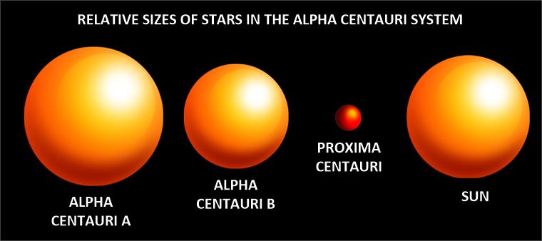
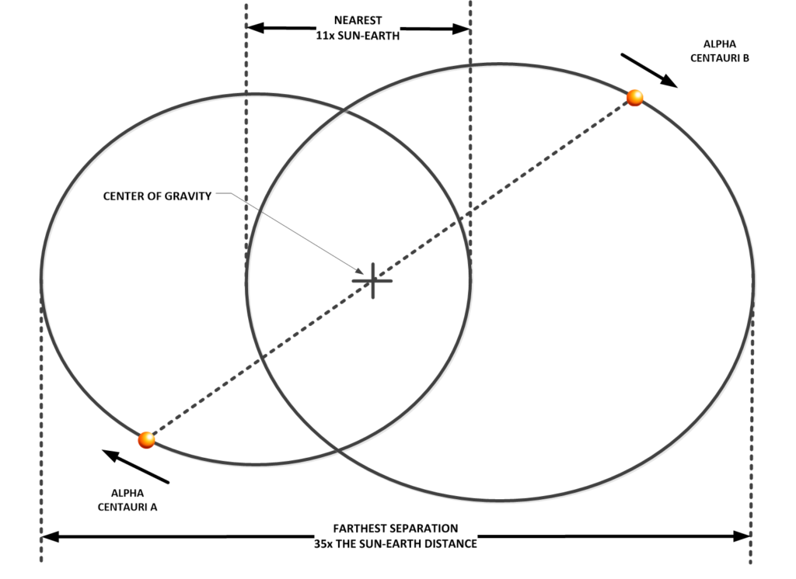
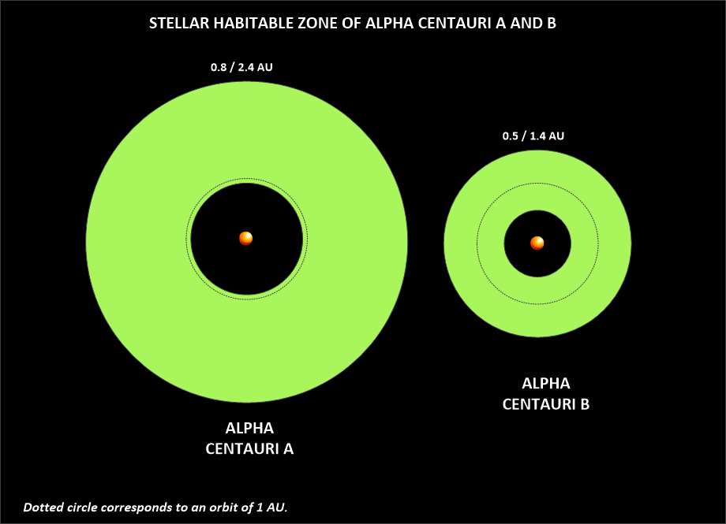
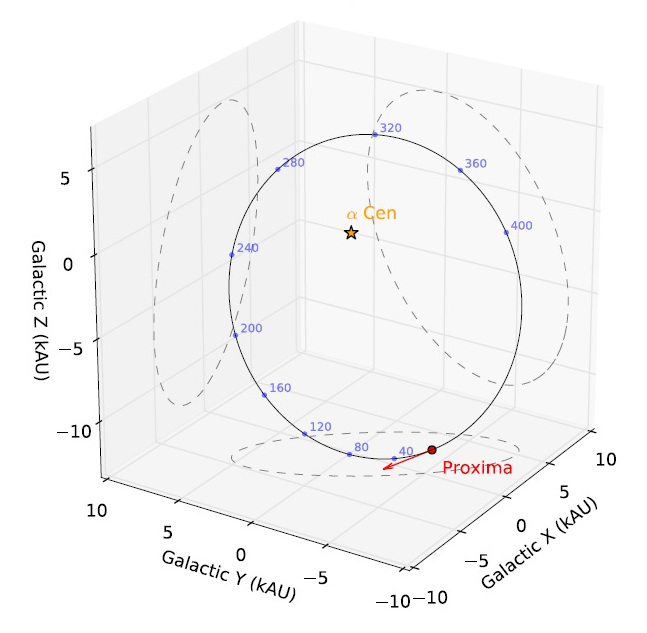
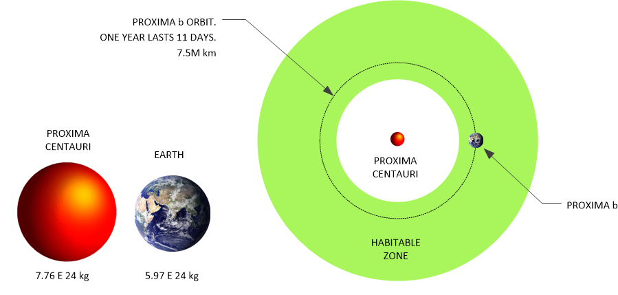
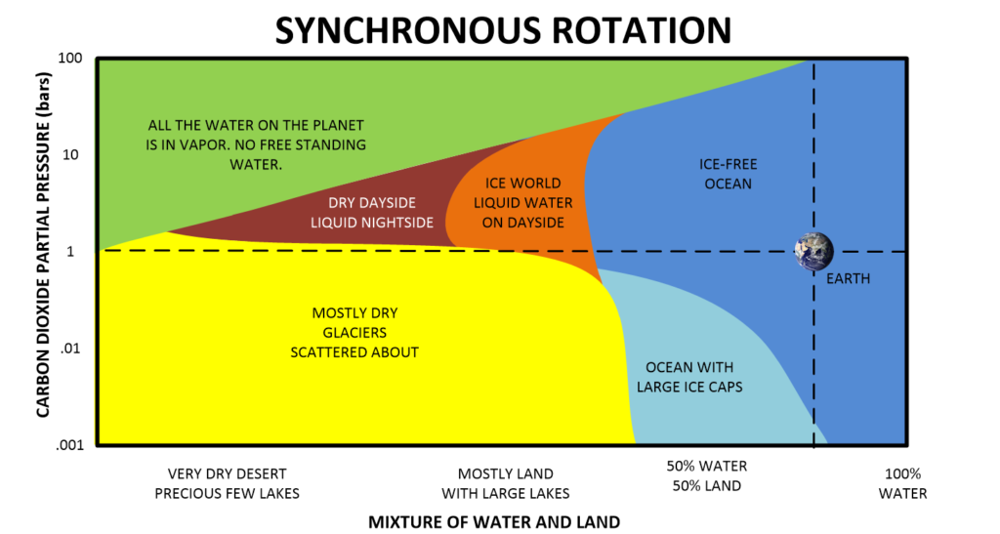
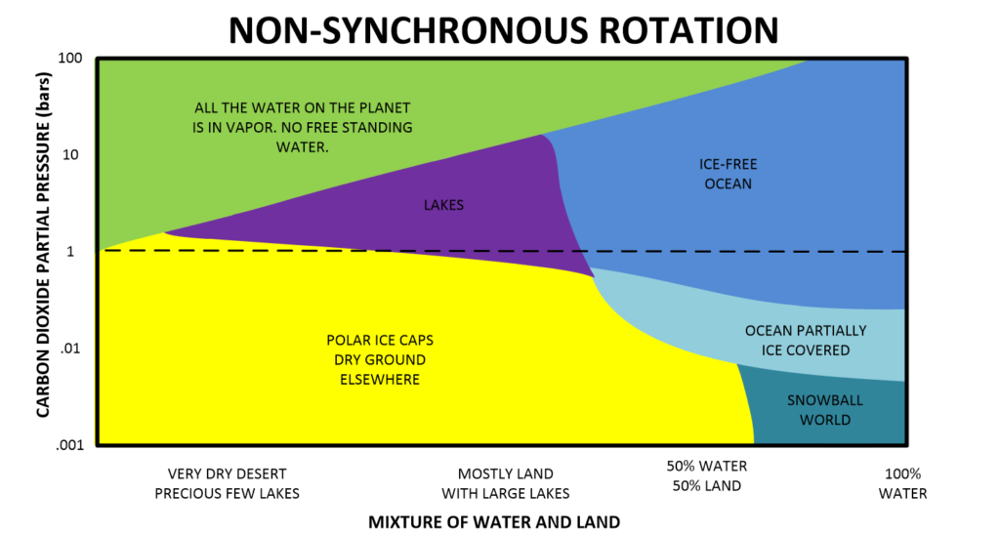

Earth aside, we as humans will naturally begin our excursions outside of our sentience nursery by visiting the closest stellar neighbors. We will take a tour of the local neighborhood with our nearest stellar neighbor; the Alpha Centauri system. This is an important solar system in many ways, and deserves close scrutiny.
The Alpha Centauri system is the closest solar system to our sun. Viewed from the earth, Alpha Centauri (α Centauri) is the third brightest “star” in the (Southern hemisphere) night sky. It appears (to the naked eye) as a single bright point of light; a single star. But, it is not a single star at all, but rather a triple star system. This trinary solar system consists of three stars and with them, three separate groups of solar systems. In it two, more or less sun-like stars (A and B), orbit a central point in space. A third star, which is a small red dwarf named Proxima Centauri, orbits the two inner stars.
Americans cannot view this star directly unless they live in the Southern hemisphere.

Trinary System
Most importantly for our purposes and considerations, each individual star has its own solar system. Thus, the Alpha Centauri system is but a grouping of three entire and complete solar systems. Each one with its own set of planets and moons. Two of the solar systems are just like ours. (Although truncated in size.) They are very similar to our own system up to the range of the outer gas giants. Thus, it is (more or less) reasonable to expect a similar solar system structure to our very own. These two stars are all about the same age, size, color and behavior to our sun.
This trinary system is located 1.34 parsecs or 4.37 light years from the Sun, making it (undisputedly) the closest star system to our Solar System. We are fortunate to have a trinary star system nearby. We are also doubly fortunate to have one that has stable stars and behavior.
Alpha Centauri A & B
While the two inner stars are similar to our sun in age, size and color, the outer sun is cooler and smaller. It is an often an ignored system because it is not as “interesting” as the inner twin stars. This all changed with the discovery of a orbiting planet, of earth size, in the habitable zone of Proxima Centauri in 2016.
Due to its small size, any habitable planet must orbit close to the star. There is a risk of the planet being tidally locked with one side always facing the star, with the other side eternally cold. In any event, habitable planets in this system would see a gigantic red sun in their sky. It would appear much bigger than we can conceive, perhaps even dominating the vast sky above. This is according to conventional belief.

Alpha Centauri A and Alpha Centauri B orbit a common center every 79.91 years. The distance between the stars varies from 35.6 astronomical units (5.3 billion kilometers) to 11.2 astronomical units (1.67 billion kilometers). The distances are roughly equivalent to those between the Sun and Pluto and between the Sun and Saturn. The angular separation between Alpha Centauri A and Alpha Centauri B varies from 2 to 22 arcseconds. The total mass of the binary star system is about 2 solar masses.
It is reasonable to expect some kind of life in any or all of these systems. Either naturally evolving, or seeded by another race. I do not know very much about life outside of our solar system, but what I do know that there is an extremely high probability that there is an extraterrestrial presence in this system. In fact, almost all the stars (including the dim brown dwarfs) surrounding us has extraterrestrial life in one form or the other.

Since this is a trinary star system, the quantum fields (The “spiritually” energized and entangled quantum fields in regards to biological ambulatory organisms with a degree of self-actuation.) involved are quite complex compared to a simple single star solar system like ours.
The non-physical reality is more complex than what we see in our solar system.
Those living and visiting this system have to be prepared for the complex nature of this quantum field. (Compared to our solar system.) On one aspect, it is interesting, exciting and quite dynamic. On the other hand, there are notable energy potentials that can wreck all kinds of havoc on earth-centric biological processes. I feel sure that humans can visit the system, but the ability to stay there and thrive will most certainly require the creation of a new biological form that is adapted for the quantum vortexes that exist there (We are quantum being occupying a physical body in a physical universe, don’t you know.).
Both of these two major solar systems are stable.
The presence of the two stars have stewarded any errant planets and asteroids rendering the physical space clean. This would be very similar to what the larger gas giant planets would do. Even though I spent a considerable amount of time discussing Proxima Centauri, it is actually these two “inner” solar systems that host the best chance for habitable planets and extraterrestrial life.
Make no mistake, there are large “gas giant” type planets that orbit these stars, and they influence the smaller planets to various degrees. Also, from a physical and biological point of view, the trio of suns all have influences on the biological lives that occupy the planets there. For instance, we know how our own solar system interacts with the biology of humans; sunspots, for instance. Sunspot activity of our sun influences all kinds of weather and human behaviors. Thus, imagine how the sunspot behaviors of three stars in close proximity might influence the lives present on those orbiting planets.
Proxima Centauri
Proxima Centauri is a tiny star that orbits the two larger inner stars. It orbits at a greater distance away from the two inner stars. So much so, that a diagram including all three is nearly impossible to show all their orbits together. That is because the orbit of Proxima Centauri is many times larger than the orbits of Proxima Centauri A and B.

Red Dwarf Star
Proxima Centauri is what is known as a red dwarf star. A red dwarf is a small and relatively cool star on the main sequence, either late K or M spectral type. Red dwarfs range in mass from a low of 0.075 solar masses to about 0.50 solar masses, and have a surface temperature of less than 4,000 K. Red dwarfs are by far the most common type of star in the Milky Way, at least in the neighborhood of the Sun, but because of their low luminosity, individual red dwarfs cannot easily be observed. From Earth, not one is visible to the naked eye. This is a red dwarf (Type M5 to M5.5, apparent magnitude 11.05), as are twenty of the next thirty nearest. According to some estimates, red dwarfs make up three-quarters of the stars in the Milky Way.
It has a large orbit that surrounds the two larger stars in the Alpha Centauri solar system. All in all, it lies about 4.24 light-years from the Sun, inside the G-cloud, in the constellation of Centaurus.
Proxima Centauri is classified as a red dwarf is of spectral class M5.5.
In astronomy, stellar classification is the classification of stars based on their spectral characteristics. Light from the star is analyzed by splitting it with a prism or diffraction grating into a spectrum exhibiting the rainbow of colors interspersed with absorption lines. Most stars are currently classified under the Morgan–Keenan (MKK) system using the letters O, B, A, F, G, K, M, L, T and Y, a sequence from the hottest (O type) to the coolest (Y type). The types R and N are carbon-based stars, and the type S is zirconium-monoxide-based stars. Each letter class is then subdivided using a numeric digit with 0 being hottest and 9 being coolest (e.g. A8, A9, F0, F1 form a sequence from hotter to cooler).
It is further classified as a “late M-dwarf star”, meaning that at M5.5, it falls to the low-mass extreme of M-type stars. Its diameter is about one-seventh of that of the Sun. Proxima Centauri’s mass is about an eighth of the Sun’s, but its average density is about 40 times that of the Sun.
Luminosity
Its total luminosity over all wavelengths is 0.17% that of the Sun, although when observed in the wavelengths of visible light the eye is most sensitive to, it is only 0.0056% as luminous as the Sun. This means that if an astronaut were to orbit the star, he would have a very difficult time seeing it. It would appear as a very dim blood-red disc in the dark-dark sky.
Likewise, any planet orbiting a red dwarf would be dimly lit. At least that is how it would appear from human eyes. But, you know, human eyes were developed or evolved for the energetic G3 star that we call our sun.
Creatures that evolved on planets in orbit around dimmer stars see light differently than we do. They can often see in the IR range and view vision as something else altogether.
In the case of Proxima Centauri, more than 85% of its radiated power is at infrared wavelengths. To our human eyes, it is difficult to see, and any habitable planet orbiting it would appear very dim, even being so close to the star. However, were a race to have eyesight that could see in the infrared range, the light would be quite bright. In fact, as bright as our own sun as viewed from a more distant point such as from Neptune.
Although it has a very low average luminosity, Proxima is a flare star that undergoes random dramatic increases in brightness because of magnetic activity. The star’s magnetic field is created by convection throughout the stellar body, and the resulting flare activity generates a total X-ray emission similar to that produced by (our) Sun.
Being a “flare star” is a reasonably common attribute associated with brown dwarf stars. They tend to change in brightness over time. Part of this might be due to sun spots of enormous size, flares that vary in intensity and size, variations in the stellar gravitational field that periodically readjusts, or to other issues too numerous to address here. I personally like to believe that some “flare stars”, especially the regular and periodic ones, are misidentified as a flare star. Instead they are simply a brown dwarf that has a nearby companion planet or body that causes the brightness to vary from time to time.
Flare Outbursts
According to the TV documentary “Alien Worlds”, Proxima Centauri’s flare outbursts could be problematic.
Solar flares are tremendous explosions on the surface of the Sun. In a matter of just a few minutes they heat material to many millions of degrees and release as much energy as a billion megatons of TNT. They occur near sunspots, usually along the dividing line (neutral line) between areas of oppositely directed magnetic fields.
Flares release energy in many forms – electro-magnetic (Gamma rays and X-rays), energetic particles (protons and electrons), and mass flows. Flares are characterized by their brightness in X-rays (X-Ray flux).
- The biggest flares are X-Class flares.
- M-Class flares have a tenth the energy.
- C-Class flares have a tenth of the X-ray flux seen in M-Class flares.
Indeed, it could erode the atmosphere of any planet in its habitable zone, but the documentary’s scientists thought that this obstacle could be overcome. Gibor Basri of the University of California, Berkeley, even mentioned that “no one [has] found any showstoppers to habitability.”
" For example, one concern was that the torrents of charged particles from the star's flares could strip the atmosphere off any nearby planet. However, if the planet had a strong magnetic field, the field would deflect the particles from the atmosphere; even the slow rotation of a tidally locked dwarf planet that spins once for every time it orbits its star would be enough to generate a magnetic field, as long as part of the planet's interior remained molten.”
Other scientists, especially proponents of the “Rare Earth hypothesis”, disagree that red dwarfs can sustain life. (Of course they do. They believe that there is only ONE earth-like planet in the universe!) Their contention is that the tide-locked rotation may result in a relatively weak planetary magnetic moment, leading to strong atmospheric erosion by coronal mass ejections from Proxima Centauri.
These individuals strongly argue that the earth and the conditions for life on any planet similar to Earth is extremely rare, and that the chance of finding an Earth-like planet in our galaxy (of billions of solar systems) is impossibly unlikely. Thus their belief structure has been coined as the “Rare Earth hypothesis”.
All this being stated; the truth is that Earth scientists do not know (at all) whether any habitable planets can exist around a red dwarf of this nature. I do not know either. I personally believe that the stellar nursery for evolving intelligence’s is around one or both of the two inner stars.
Discovered World around Proxima Centauri
In 25 August of 2016, an anonymous source from the ESO told German publication Der Spiegel the discovery is the closest habitable planet to Earth, orbits Proxima Centauri. The sources leaked news that the European Southern Observatory (ESO) had spotted an alien world orbiting Proxima Centauri. This was later confirmed by an Guardian article that stated that a planet was indeed found.

Thought to be at least 1.3 times the mass of the Earth, the planet lies within the so-called “habitable zone” of the star Proxima Centauri, meaning that liquid water could potentially exist on the newly discovered world. Named Proxima b, the new planet has sparked a flurry of excitement among astrophysicists, with the tantalising possibility that it might be similar in crucial respects to Earth.
“There is a reasonable expectation that this planet might be able to host life, yes,” -Guillem Anglada-Escudé, co-author of the research from Queen Mary, University of London.
Taking 11.2 days to travel around Proxima Centauri, the planet orbits at just 5% of the distance separating the Earth and the sun. But, researchers say, the planet is still within the habitable zone of its star because Proxima Centauri is a type of red dwarf known as an M dwarf – a smaller, cooler, dimmer type of star than our yellow dwarf sun.
Planetary Evolution of Proxima b
While Proxima b is today in the so-called “habitable zone” of its star, where surface oceans may exist, it has not always been the case. Its star has evolved differently from solar-type stars, and its brightness has decreased over time. Early in its history, the planet received a much greater flux of energy. The planet we see today has changed much during it’s evolution.
During the early “hot phase”, when the star was young and planets were newly formed, water was vaporized into a thick atmosphere exposed to high-energy radiation from its star. Proxima, like most red dwarfs, is very active and the planet is exposed to more X-ray and extreme-UV radiation than Earth. The combination of these two factors, vaporization of the water and strong exposure to high-energy radiation and particles, generates evaporation from the atmosphere to space and erosion of the water content.
What we need to do is characterize the radiation spectrum of the star in the range from X-rays to the UV in order to estimate the atmospheric losses over time. That will enable us to determine whether the water reservoir and the atmosphere could survive this early “hot phase” of this planet’s formation. The current fate of Proxima b depends on the amount of water and gas the planet inherited during its formation, which was very different from that of the Earth. We do not know if b Proxima began its history with more or less water than Earth and the planet could still possess a thick atmosphere and oceans despite early atmospheric losses.
Possible climates of Proxima b
Scientists have exploring a broad variety of atmospheric compositions and water inventories possible under different scenarios for this planet. To achieve this theoretical exploration, the scientists used a 3D climate model similar to those used to study the Earth’s climate but especially developed for exoplanets and including all the relevant characteristics of the Proxima system.
At the short orbital distance of Proxima b, strong tidal forces exerted by the star allow only two possible rotations for the planet.
- In the first case the planet is synchronous, its rotation period is equal to its orbital period (11.2 days) and it always presents the same face to its star.
- In the second case the planet rotates 3 times every 2 orbits (3:2 spin-orbit resonance, like Mercury), a situation that can arise if the orbit is slightly eccentric (which is possible but not yet determined).
In all cases, Proxima b should not have seasons because tidal forces cancel the obliquity, bringing the equator on the planet’s orbital plane. Numerical simulations show that liquid water is possible for a wide range of atmospheric compositions. Depending on the rotation period and the amount of greenhouse gases, water may be present over the surface of the planet only in the sunniest regions: that is to say in the area facing permanently the star in the synchronous case and in a tropical belt in the asynchronous case.
In a simulation of surface temperature for synchronous rotation, without taking into account various weather or oceanic effects, we can see that one side of the planet would be cold with temperatures averaging around -30C. While the other side would be comfortably warm, with temperatures somewhere within the comfort limits for humans.
In the asynchronous rotation model, we can visualize a cooler planet. It would be rather cold world-wide, with average temperatures that would prefer snow and ice, with enough variation to permit freezing and thawing activities.
Note that subsurface (underground) liquid water can also provide habitable conditions (similar to Jupiter’s moon Europa in the Solar System). However, such biosphere would not allow for remote detection from Earth. If liquid water is present at the surface, biological photosynthesis is possible and its affects the entire planetary environment so that it can potentially be observable from interstellar distances.


Seeing the planet
It is possible that soon, certain telescopes could see this planet. In particular the 39-m ESO E-ELT whose construction just began in Chile. This large telescope will actually “see” the world by separating it from its star, something that is feasible today only for some newly formed gas giant planets. These observations will tell us whether Proxima b has water, an atmosphere and a habitable climate.
A tentative step to explore potential climate of Proxima b
Published in leading scientific journal, Astronomy & Astrophyics, on Tuesday, May 16th 2017, a group of scientists explored the potential climate of the planet, towards the longer term goal of revealing whether it has the potential to support life.
Using the state-of-the-art Met Office Unified Model, which has been successfully used to study the Earth’s climate for several decades, the team simulated the climate of Proxima b if it were to have a similar atmospheric composition to our own Earth. The team also explored a much simpler atmosphere, comprising of nitrogen with traces of carbon dioxide, as well as variations of the planets orbit. This allowed them to both compare with, and extend beyond, previous studies.
Crucially, the results of the simulations showed that Proxima b could have the potential to be habitable, and could exist in a remarkably stable climate regime. However, of course this comes with a statement that the study is preliminary and based on what little data we now have. They argue, correctly I must add, that much more work must be done to truly understand whether this planet can support, or indeed does support life of some form.
Their paper can be referenced: "Exploring the climate of Proxima B with the Met Office Unified Model" by Ian Boutle, Nathan Mayne, Benjamin Drummond, James Manners, Jayesh Goyal, Hugo lambert, David Acreman and Paul Earnshaw is published in Astronomy & Astrophyics. Found at https://phys.org/news/2017-05-scientists-tentative-explore-potential-climate.html#jCp
Dr Ian Boutle, lead author of the paper explained:
"Our research team looked at a number of different scenarios for the planet's likely orbital configuration using a set of simulations. As well as examining how the climate would behave if the planet was 'tidally-locked' (where one day is the same length as one year), we also looked at how an orbit similar to Mercury, which rotates three times on its axis for every two orbits around the sun (a 3:2 resonance), would affect the environment."
Dr James Manners, also an author on the paper added:
"One of the main features that distinguishes this planet from Earth is that the light from its star is mostly in the near infra-red. These frequencies of light interact much more strongly with water vapour and carbon dioxide in the atmosphere which affects the climate that emerges in our model."
Using the Met Office software, the Unified Model, the team found that both the tidally-locked and 3:2 resonance configurations result in regions of the planet able to host liquid water. However, the 3:2 resonance example resulted in more substantial areas of the planet falling within this temperature range. Additionally, they found that the expectation of an eccentric orbit, could lead to a further increase in the “habitability” of this world.
Dr Nathan Mayne, scientific lead on exoplanet modelling at the University of Exeter and an author on the paper added:
"With the project we have at Exeter we are trying to not only understand the somewhat bewildering diversity of exoplanets being discovered, but also exploit this to hopefully improve our understanding of how our own climate has and will evolve."
A Hypothesized World around Proxima Centauri
The TV documentary “Alien Worlds” hypothesized that a life-sustaining planet could (possibly) exist in orbit around Proxima Centauri or other (similar)red dwarfs stars. The validity of this documentary is in question, but I present it for the reader to come to their own conclusions.
By calculation, such a planet would lie within the habitable zone of Proxima Centauri, about 0.023–0.054 AU from the star, and would have an orbital period of 3.6–14 days . Obviously, a planet orbiting within this zone will experience tidal locking to the star, so that Proxima Centauri moves little in the planet’s sky, and most of the surface experiences either day or night perpetually. However, we do not know how this effect would be mitigated through the presence of an atmosphere. In fact, the presence of an atmosphere could serve to redistribute the energy from the star-lit side to the far side of the planet.
Possibility of Humanoid Habitability
There’s been lots of speculation about the little world known as Proxima Centauri b since astronomers announced its discovery.
With a minimum mass of 1.3 Earths, the exoplanet orbits its star at roughly one-tenth the distance that Mercury loops the Sun. Yet because Proxima Centauri is a red M dwarf (the runts of the stellar litter) this total lack of personal space puts the world in the star’s putative habitable zone, the region where, given an Earth-like atmosphere and rocky composition, there’s the right amount of incoming starlight to sustain liquid surface water.
The Basics
What qualifies an extrasolar planet as being earth-like and hence a possible haven for life? First, a planet must orbit in a star’s habitable zone. The habitable zone is the narrow region around a star in which the possibility of liquid water, thought essential for life, can exist. If a planet orbits its star closer than the habitable zone, the planet’s surface likely is too hot for liquid water to exist. If the planet orbits farther away, the planet’s surface probably will be too cold for liquid water. The distance of the habitable zone from a particular star depends upon the star’s temperature and brightness.
While being in the habitable zone is a necessary condition for life, it is not a sufficient condition. A planet also must have the proper kind of atmosphere. Planets that are too small lack gravity to hold on to much of an atmosphere. This is the situation of Mercury, Mars, and the earth’s moon. Without a significant atmosphere to provide pressure that can contain water, liquid water cannot exist. But if a planet is too large, its much greater gravity tends to hold onto the wrong kind of atmosphere. This is the situation of Jupiter and the other three Jupiter-like planets in the solar system. What constitutes a wrong atmosphere? There are several ways that an atmosphere can go awry.
Some gases are directly hostile to life. If they are in abundance, polyatomic gases can be harmful indirectly. Polyatomic gases have three or more atoms in their molecules. Polyatomic gases block infrared (IR) radiation. IR radiation sometimes is called heat radiation, because many objects cool by emitting IR radiation. For instance, at night the ground emits IR radiation to lose heat that it absorbed from the sun during the day. Polyatomic gases block IR radiation, preventing this cooling. This is similar to how a greenhouse holds in heat, so polyatomic gases sometimes are called greenhouse gases in this context. Water vapor is the most significant greenhouse gas in the earth’s atmosphere. That is why the temperature remains warm on humid nights, but the temperature can plunge during nights when the humidity is low. Carbon dioxide (CO2) is another greenhouse gas that can hold in heat. This is the basis for concern about global warming and climate change due to increased output of CO2 by human sources since the industrial revolution. The planet Venus has an atmosphere that is much denser than the earth’s atmosphere, and its atmosphere is dominated by CO2. This results in an extremely hot surface temperature on Venus. Clearly, a planet similar to Venus is hostile to life.
Contrast this to earth’s atmosphere that is dominated by diatomic gases, gases having two atoms per molecule. The major component (78%) of earth’s atmosphere is nitrogen (N2). This gas is inert, merely providing bulk to the atmosphere. Much of the remainder of the earth’s atmosphere (21%) is oxygen (O2), the substance that is essential for human and animal life. Greenhouse gases make up far less than 1% of the earth’s atmosphere. This small amount of greenhouse gases is ideal in that it holds in some, but not all, heat at night. This provides a modestly warm, but not hot, atmosphere. Astrobiologists, scientists who study the possibility of life elsewhere in the universe, recognize the ideal nature of the earth’s atmosphere. They reckon that the best hope for finding life elsewhere is on a planet with an atmosphere similar to earth’s atmosphere.
If a planet orbits in the habitable zone of a star, but is too small to have any significant atmosphere, it is deemed non-earth-like. On the other hand, if a planet orbiting in the habitable zone of a star is too massive, it almost certainly will have an atmosphere similar to Jupiter or perhaps even Venus, and it too is deemed non-earth-like.
How does the new exoplanet Proxima Centauri b stack up?
As previously mentioned, it orbits in Proxima Centauri’s habitable zone. However, the star Proxima Centauri is much smaller, less massive, and cooler than the sun. Hence, its habitable zone is much smaller than the sun’s habitable zone. Proxima Centauri b orbits just 1/20 the earth’s distance from the sun. Rather than orbiting once each 365 days as the earth does, Proxima Centauri b’s orbital period is a mere 11.2 days. The minimum mass of the planet is 1.3 times that of the earth. Since this is a minimum mass, the actual mass could be greater. This mass range almost assures that Proxima Centauri b has an atmosphere. If Proxima Centauri b’s mass is close to the minimum mass, then there is some chance that its atmosphere may have the properties similar to earth’s atmosphere, but this is not guaranteed.
But even if Proxima Centauri b has an atmosphere with composition similar to earth’s atmosphere, there are other problems. Orbiting so closely to its star, Proxima Centauri b is expected to experience tidal locking so that it rotates synchronously. That is, the planet probably orbits with one side facing Proxima Centauri. The side of the planet that always faces the star is probably far too hot for living things, while the side that is perpetually in darkness is likely too cold. Only in a ring near where the star is always up but not too high above the horizon could there be conditions suitable for life.
Depending on how planetary magnetic fields are generated, tidal locking might have dampened any nascent magnetic field that Proxima Centauri b had. This is significant, because red dwarfs like Proxima Centauri are prone to harmful radiation. The earth’s magnetic field protects the earth’s atmosphere from the flow of charged particles from the sun (the solar wind).
Without this protection, charged particles from the sun would eventually strip earth of its atmosphere. The amount of the solar wind is directly related to the strength of the sun’s magnetic field. For instance, flares and coronal mass ejections (both related to the sun’s magnetic field) greatly increase the solar wind. Presumably, a star’s wind is related to its magnetic field too. Proxima Centauri’s magnetic field is hundreds of times stronger than the sun’s magnetic field, suggesting that its stellar wind is far greater than the solar wind. Red dwarfs, such as Proxima Centauri b, are prone to flares and probably experience coronal mass ejections greater than the sun does.
Furthermore, being only 1/20 as far from its star, for a given level of stellar wind, Proxima Centauri b would experience 400 times as much damage as the earth does. Therefore, even with some protection of stripping by stellar wind from any magnetic field that it might have, Proxima Centauri b probably cannot protect its atmosphere.
So even if Proxima Centauri b initially had an atmosphere, it probably lost it. Without an atmosphere, life if not possible. Finally, the increased level of activity of the star Proxima Centauri and Proxima Centauri b’s close proximity to it likely causes the planet to experience far higher levels of ultraviolet and X-ray fluxes than the earth does. These radiations are harmful to life.
A Desert World- Edward Guinan (Villanova University) Opinion
Before they become full-fledged, hydrogen-fusing stars, the smallest red dwarfs spend a few hundred million years contracting. During this stage, they’re much brighter than they will be during their adult years, by roughly a factor of 50, said Edward Guinan (Villanova University) during a session on January 4th. Furthermore, young M stars shoot out gads of X-ray and ultraviolet radiation — roughly 100 times as much in X-ray and 10 to 20 times as much in UV as those dwarfs as old as the Sun.
Adding insult to injury, these young stars unleash dangerous flares, and if an orbiting world has a weak or nonexistent global magnetic field, the star’s winds could tear the atmosphere off the planet. “If you have a weak magnetic field, you’re done for,” Guinan said. “There’s really no way to survive.”
All these factors put together mean that, in Proxima Centauri’s earliest days, its habitable zone was farther out than it is now. If the exoplanet formed where it currently resides (in the modern habitable zone), then the world “underwent a living hell in its early 300 to 400 million years,” Guinan said.
For the past decade, Guinan and his team have been pursuing a project called Living with a Red Dwarf. They’re amassing data on all the small, cool M dwarfs within about 30 light-years of Earth, trying to understand their rotation rates, starspottiness, ages, and more. Given what they’ve learned from that work, Proxima Centauri b is most likely a desert world in their opinion.
A Venus-Like World – Victoria Meadows (University of Washington) Opinion
Victoria Meadows (University of Washington), who presented in the same session, has come to the same conclusion. She and her colleagues considered different potential atmospheres and ran simulations to determine how the exoplanet might look today, about 5 billion years after its formation. They determined that, if there were surface water, the incoming radiation likely would have evaporated most or all of it. And since water is made of oxygen and hydrogen, and hydrogen is more easily yanked from a planet’s gravitational grasp, the process could have built up a large, oxygen-rich atmosphere. A carbon dioxide–rich, Venus-like atmosphere is another possibility.
A Mercury-like World -University of Göttingen in Germany
Proxima b is also pretty darn close to its star. Where Earth is 93 million miles from the sun on average, Proxmia b and its star are just 4 million miles apart—5 percent as far. Because red dwarfs are so much cooler than our Sun, the planet can be this close without getting charred to a crisp.
Yet this proximity could cause two problems. First, Proxima b is likely to be tidally locked, meaning the same face of the planet always faces the star. It’s like the way the same side of the moon always faces the Earth. (However, a thick enough atmosphere could keep the world twirling.)
Tidally locked planets were once regarded as inhospitable to life — baked too hot on the star-facing side, and freezing cold on the dark side. But recent research suggests that such worlds may indeed be habitable; winds in their atmospheres could distribute heat, smoothing out temperature extremes.
Second, depending on how and when Proxima b was formed, early blasts of stellar radiation could have blown away much or most of Proxima b’s hypothetical atmosphere. That said,
"none of this excludes the possibility of an atmosphere and water, it all depends on the history of the stellar system," .
An Ocean World -Marseille Astrophysics Laboratory
The entire surface of Proxima b — the possibly Earth-like planet orbiting the closest star to the sun, Proxima Centauri — may be covered in a liquid ocean, according to a new study.
While there is still much to learn about the solar system’s newfound neighbor, previous research found that Proxima b has two key features in common with Earth: it orbits within the habitable zone of its star — meaning it could have the right surface temperature to allow for the presence of liquid water— and it has a mass 1.3 times that of Earth.
Using this information, a team led by researchers at the Marseille Astrophysics Laboratory in France, developed different models to help discover what the conditions might be like on the rocky exoplanet, according to a statement from NASA.
The new findings suggest Proxima b could have a large liquid ocean covering its entire surface and stretching 124 miles (200 kilometers) deep, as well as a thin gas atmosphere much like that found on Earth. These features favor the planet’s potential for supporting life, according to the statement.
Scientists have proposed different ideas about Proxima b’s composition and surface conditions, and the new models provide more information that could help inform those ideas, NASA officials said in the statement. Some of those ideas…
"involve a completely dry planet, while others permit the presence of a significant amount of water in its composition,"
Using the planet’s known mass (1.3 times that of Earth), the authors of the research simulated different potential compositions for Proxima b and then estimated the radius of the planet for each of those scenarios. The study revealed that Proxima b could have a radius anywhere between 0.94 and 1.4 times that of Earth, according to the NASA statement.
For one of the potential composition models, the researchers found Proxima b may be an “ocean planet” similar to some of the icy moons around Jupiter and Saturn that harbor subsurface oceans. In this water-world scenario, the planet would have a radius of 5,543 miles (8,920 km), which is 1.4 times the radius of Earth. It would be composed of about 50 percent rock and 50 percent water. The pressure beneath this massive, deep ocean would be so strong that a layer of high-pressure ice would form, according to the NASA statement.
Another model developed in the study suggests Proxima b would have an internal composition similar to the planet Mercury, with a minimum radius of 3,722 miles (5,990 km), or 0.94 times the radius of the Earth. In this scenario, the planet would be incredibly dense, with a metal core accounting for 65 percent of the planet’s mass. The rest of the planet would be composed of a rocky silicate mantle, and liquid water oceans accounting for less than 0.05 percent of the planet’s mass (similar to that seen on Earth), according to the statement.
However, ultraviolet and X-rays from Proxima Centauri could leave the water on Proxima b prone to evaporation. To account for this, the researchers also calculated the radius of Proxima b with a completely dry composition.
"Future observations of Proxima Centauri will refine this study,"
Alternative viewpoints
Alternatively, Proxima Centauri b might indeed be habitable if it started out with a protective, hydrogen-rich envelope, or if it formed farther from the star — and thus farther from the deadly radiation — and then migrated to its current, close position. Forming farther out would also be good for its chances for water, because ices are more prevalent in the outer reaches of planet-forming disks: the little world might then have had a repository of ice that, when it scooted in closer to the M dwarf, melted into seas.
Assuming it’s rocky, that is: astronomers only have a minimum mass for the exoplanet. It could instead be like Uranus and Neptune.
Summary of Opinions
Well, it seems like everyone has an opinion of what planet Proxima b is like…
- A Desert World– Edward Guinan (Villanova University) Opinion
- A Venus-Like World – Victoria Meadows (University of Washington) Opinion
- A Mercury-like World -University of Göttingen in Germany
- An Ocean World -Marseille Astrophysics Laboratory
How about we just simply say that it could be just about anything because at this time, we simply don’t have enough information to make any reasonable guesses.
Reports of Extraterrestrial Life
You will often find all sorts of reports regarding life around the more commonly known stars. This Alpha Centauri system is one of the most commonly bantered about names. Most of which that is stated is complete nonsense. Nothing that I remember, repeated anything that verified or confirmed any of the reports that you come across on the Internet.
But, then again, that doesn’t mean anything, either.
Herein, I provide some testimonials that I have gathered for your own personal investigations. I neither support them, nor disparage them. I place them here for the enjoyment of the reader. It is not an exhaustive nor a complete listing.
Alex Collier
Alex Collier claims the Alpha Centaurians are one of the races visiting the Earth. Though which star (which one of the three, I wonder?) their home world surrounds is never discussed. This is a serious omission and indicates the true extent of the report.
Elizabeth Klarer
An interesting testimony supporting the presence of the Alpha Centaurians is Elizabeth Klarer. She had high level responsibilities within the British military to monitor UFO reports. Apparently she was contacted by the Alpha Centaurians and eventually taken to Alpha Centauri for a few months to have a child fathered by the Alpha Centaurian, Akon. (!) That’s a pretty large responsibility!
“(The Alpha Centaurians) …are from the one civilization… of seven planets. But they are preparing other planets for human habitation in the system of Vega. Vega is a young blue-white waxing star.” -Elizabeth Klarer
Really? Vega. Oh my goodness!
Her testimony is quite interesting, but I do doubt every single word of it. If the inhabitants of Alpha Centauri really wanted to emigrate to another planet, they would naturally choose one that was similar to their own environment, and closer to them. Vega does not, in the least, fit this baseline criteria. Anyways, what do I really know? She might be telling the truth, though I really do doubt it.
Read more;
“The ship is created in space from pure light energy into substance, and it takes naturally the celestial form. They then bring her to the surface of the planet and construct the interior. But the whole skin of the ship is created in space in order that this atomic structure of the skin of the ship is conducive to energizing. That’s how you get the power and the different colors.” -Elizabeth Klarer on how their spacecraft are manufactured.
Read more;
“They are human but taller, better looking, more considerate and gentle; not aggressive and violent. They dress and eat more simply and are still young at an age of 2000 years of Earth time. Their star is not so violent. Our sun is a variable and produces rather harsh radiation which affects the skin, ages one, and can be dangerous. They wear simpler and less clothing made out of silk. Silk is beautiful and comfortable next to the skin. Everything is free and you can pick out your own clothes at a silk farm. There is an abundance of everything. No money or barter system is necessary.” -Elizabeth Klarer on what they look like and their society
Read more;
“It is similar in size to Earth, a little larger, covered with vast seas, and the lands are islands, not continents. Climate is beautiful, under control, and in fact, is really a utopia. They have everything they want. They are not only thousands of years ahead technologically from us, but are also spiritually very advanced.” -Elizabeth Klarer on their “home” planet (yet she states elsewhere that they have seven planets that they occupy).
Read more;
“There are no politics, law, or the monetary system. Medicine is a scientific activity and not required for health since they are all in perfect health. Their way of thinking is quite different from what most people over here would understand. They are a loving, gentle and constructive people. Everyone industriously does their work which they like doing most. There is no need for law; there is no crime or police. Everyone is free and has a code of ethics. They constantly create beauty around them and in general there is complete harmony. Their homes are lovely. You can see from the inside out; the material is transparent one way. Regarding pets, they love their birds, in particular, and there is telepathic communication with them. Predatory animals are kept on a different planet.” -Elizabeth Klarer on their society.
Sorry. I do not believe any of this. But then, no one believes a word that I have to say either. Maybe she knows something that I don’t know. It’s very possible, don’t you know. However, while I am sure that she is a really nice lady, I will keep to myself and simply state that I don’t believe her.
Unknown woman under hypnosis in 1957
The alleged entity spoke through a woman being examined under hypnosis by a team of California psychologists. The entity claimed that he was an extraterrestrial being from a planet in the Alpha Centauri star system. The details of the entity’s self-description given during interview sessions lasting seven years — beginning form 1957 — were revealed in a book titled Hands: The True Account. A Hypnotic Subject Reports on Outer Space, published in 1976 by California psychologists Margaret Williams and Lee Gladden.
Hands claimed to be a huge extraterrestrial being with dome-shaped body and eight hands — hence the name “Hands.” He also revealed the existence of another alien race, the Cenos aliens, from a planet orbiting Proxima Centuari.
The Cenos aliens, according to Hands, were 8-8.5 feet tall humanoid beings with multiple hearts. They were five times stronger than normal humans, according to Hands. Cenos aliens have no need for sleep, suffer no diseases and have a life span of about 120 years. They have elongated skulls, big hands, and skins with huge pores. Alien folklore also describes them as spacefaring beings that wear grey spacesuits and helmets. They travel in spaceships that look like a “spinning tape recorder.”
This is interesting.
Al Bielek
An alleged former employee of the covert Montauk and Philadelphia projects, Al Bielek, discussed a number of extraterrestrials including the Alpha Centaurians. Bielek’s testimony is perhaps one of the most bizarre and controversial cases in UFO research.
“There are shuttles regularly from this planet to Alpha Centauri 4 which by agreement is a safe haven for people wanted by the U.S. Government. There’s a treaty. It takes about 12 hours to get them. “ -Al Bielek
For the record, in comment to the quote above; there is no “Alpha Centauri 4”. This is a trinary system. The solar system consists of three individual solar systems. As far as I know, there are no planets in orbit around all three stars at once. (That would be one very large orbit!) If there were, it would be in the surrounding oort cloud, and would be a very, very cold place.
On the other hand, perhaps this individual is telling the truth but is completely ignorant of the physics of space. That too is a possibility. But that being said, I highly doubt that he was ever a member of MAJestic. We are all compartmentalized. We get one posting; one specialty; one task. I had one task. Now I’m doing this. Meh. That was it.
Yet, this individual claims multiple tasking; “Montauk” and “Philadelphia project” (plus numerous other revelations…). I just do not believe it. Not at all. Even if he was in a high level management position, he would not at all discuss the matters like he does.
That is simply because how you discuss events relative to MAJestic is government by your specialty. A management level personage relates “high level” events in grand terms, with an omission toward specific details. A lower level person can relate great details but without the framework of relevance and significance.
Nursery for evolving intelligence’s
This system is like our solar system in that it is also a [1] nursery for evolving intelligence’s. It is also [2] under galactic federation jurisdiction and [3] under supervision, with [4] assistance from another group of extraterrestrials. The details on the extent of all of this participation is unknown. This implies and mandates a stable habitable planet that could sustain such life forms. Somehow I believe that some of the other evolving intelligence’s in our nearby region have visited us as part of their outward growth experiences. But who they are and what they look like is beyond my experience.
For whatever reason, I have a “feeling” that the nursery contains life forms that are ahead of humans technologically. I cannot explain WHY I have this feeling. It is probably bullshit.
Takeaways
- The Alpha Centauri solar system is a physically nearby system.
- It consists of three stars that all fit the preferred profile for habitability for sentience creatures such as ourselves.
- A planet has be “discovered” around Proxima Centauri. It has been named Proxima b.
- Many people who are involved with “UFO’s” and “extraterrestrial contacts” claim some degree of association with this system.
- This solar system is also considered to be a sentience nursery, much like our solar system is. As such, it implies native evolved sentient life of some sort.
FAQ
Q: How many planets are around Alpha Centauri?
A: This is unknown. Generally, we consider planets to orbit a star, a planet or a point in space. We do know that one of the stars in the solar system, Proxima Centauri has a planet orbiting it. We are presently unaware of any other planets orbiting either Alpha Centauri A, Alpha Centauri B, Proxima Centauri, or the entire Alpha Centauri system as a whole. I am sure that this will change in time.
Q: What is Proxima Centauri b like?
A: No one knows. Scientists have looked at what we do know about this planet and have presented their theories and ideas. In short, there is no general consensus at this time. It could be anything from a super hot world like Venus, to a frozen and lifeless world like Mercury, to a habitable ocean world. Nobody knows.
Q: Have you ever been to Alpha Centauri?
A: Heavens no! As far as I know, I have never been outside of our solar system.
Q: What is a sentience nursery?
A: It is a protected and policed area that is set up to allow emerging intelligence’s to develop their sentience’s and technology. The ability to leave the nursery is very restricted, and it will not be permitted to occur until the bulk of the (targeted) intelligent life achieves a majority stake in some type of sentience. Once this happens, the species is earmarked for genetic reconstruction so that it can fit into a galactically approved soul archetype.
MAJestic Related Posts – Training
These are posts and articles that revolve around how I was recruited for MAJestic and my training. Also discussed is the nature of secret programs. I really do not know why the organization was kept so secret. It really wasn’t because of any kind of military concern, and the technologies were way too involved for any kind of information transfer. The only conclusion that I can come to is that we were obligated to maintain secrecy at the behalf of our extraterrestrial benefactors.


MAJestic Related Posts – Our Universe
These particular posts are concerned about the universe that we are all part of. Being entangled as I was, and involved in the crazy things that I was, I was given some insight. This insight wasn’t anything super special. Rather it offered me perception along with advantage. Here, I try to impart some of that knowledge through discussion.
Enjoy.


MAJestic Related Posts – World-Line Travel
These posts are related to “reality slides”. Other more common terms are “world-line travel”, or the MWI. What people fail to grasp is that when a person has the ability to slide into a different reality (pass into a different world-line), they are able to “touch” Heaven to some extent. Here are posts that cover this topic.


John Titor Related Posts
Another person, collectively known by the identity of “John Titor” claimed to utilize world-line (MWI egress) travel to collect artifacts from the past. He is an interesting subject to discuss. Here we have multiple posts in this regard.
They are;